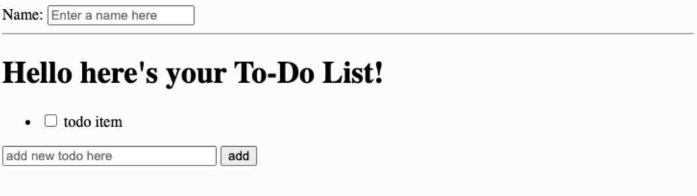

17-313: Foundations of Software Engineering
Recitation 2: Crash Course in Angular.js
Overview
This recitation aims to highlight the basics of Angular.js by walking students through the implementation of a basic To-Do list app. Students will be expected to use this knowledge to make changes to the Angular.js components of the Teedy project in a future assignment.
Pre-requisites
Task 0: Fork the repl
- Create an account on repl.it
- Fork this repl - you’ll be using this to work through this exercise and see your changes
- When you run the app you should see something like the below screenshot. At this point, all the static HTML for the todo list has been set up. You’ll be working on making the todo list app function properly using Angular.js 
Task 1: Setup Angular.js
Goal: Convert the basic HTML skeleton in the repl to an Angular.js app
Steps:
- Import the Angular.js library by adding the following script tag to the head component of index.html
<script src="https://ajax.googleapis.com/ajax/libs/angularjs/1.8.2/angular.min.js"></script>
- Add the ng-app directive to the main
<html>tag to specify the root of your app - This involves changing the
<html>tag at the top ofindex.htmlto<html ng-app>
Task 2: Data Binding Basics
Goal: Display a dynamic title based on user input
Steps:
- Use the ng-model directive to tie the value in the name text input field to a variable in the
Angular.js app’s model.
- Add
ng-model="varName"to the name text input tag
- Add
- Include
{{varName}}in theHello here's your todo liststring to bind the data in the model to the title in the view - Changing the value in the name text field should now change the title in real-time
Task 3: Setting up the controller
Goal: A boiler-plate controller called TodoListController has been set up in app.js. We want to connect our app with this controller so we can get more control over our todo list
Steps:
- Import
app.jsby adding the following script tag to the head component ofindex.html
<script src="app.js"></script>
- Change the
ng-appdirective to bind totodoApp- Change
<html ng-app>at the top ofindex.htmlto<html ng-app="todoApp">
- Change
- Add the
ng-controllerdirective to bind theTodoListController- Change the opening
<body>tag to<body ng-controller="TodoListController as todoList">
- Change the opening
- Now we can access the controller within the body tag using the todoList alias
Task 4: Rendering the list of todo items
Goal: There’s a list called todos in our controller that we’ll use to store our todo list items. We want to replace the static todo list item with the todo items in this list
Steps:
- Use the
ng-repeatdirective to render items in the list- Change the
<li>tag that renders a list item to<li ng-repeat="todo in todoList.todos">
- Change the
- Add the
ng-model="todo.done"directive to the checkbox input tag so the checkbox reflects the value in the done field of a given todo list item - Replace the static todo list item text with
{{todo.text}}to render the text associated with a given todo item in the list - Changing the data in the todos list in app.js should now change the contents of the todo list rendered
Task 5: Adding new todo items
Goal: Allow users to add new todos to the list using the form in the app
Steps:
- Use the ng-model directive to tie the value in the new todo text input field to a variable in
the angular.js app’s model
- Add
ng-model="todoList.todoText"to theadd new todo heretext input tag
- Add
- Implement the
todoList.addTodofunction in app.js- Add a new todo item to the list using the data in
todoList.todoText - Clear the text input field by setting
todoList.todoTextto the empty string
- Add a new todo item to the list using the data in
- Add the
ng-submitdirective to the form to call thisaddTodofunction on submit by changing the opening<form>tag to<form ng-submit="todoList.addTodo()">
Task 6: Special styling for completed todo items
Goal: We want to apply custom styling for completed todo items, so they appear crossed out
Steps:
- A CSS class called
done-truefor completed todo items has been implemented instyle.css. Make any changes you’d like to this CSS class - Apply this class to the todo text item
- Change the
<span>tag used to render{{todo.text}}to<span class="done-{{todo.done}}">Checking a given todo item should lead to the custom css class being applied to that item
- Change the